Real edge cases from KITTI
These scenes were found by running scene-db on 2807 scenes across KITTI, nuScenes, GLIM, Cartographer, and PPC datasets.
Each GIF is a 5-second chunk extracted by the tool.
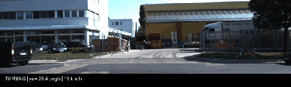
Intersection turn — localization stress test
drive_0009 frame 196-244. High yaw rate with moderate speed. EKF heading estimate is under maximum stress. IMU bias and wheel slip both contribute to drift here.
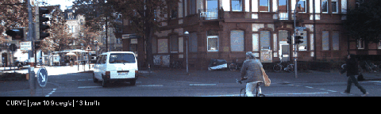
Continuous curve — dead-reckoning drift
drive_0005 frame 0-48. Low speed + sustained yaw rate. Wheel odometry accumulates lateral error. GNSS multipath likely in this residential area with trees.
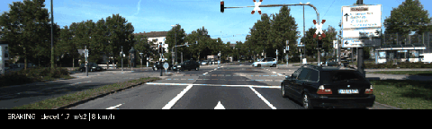
Approach to stop — perception critical zone
drive_0011 frame 98-146. Vehicle decelerating to stop. This is where late detection of obstacles or traffic signals has the highest consequence.
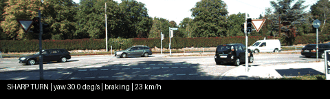
Sharp turn + braking — worst-case localization
drive_0014 frame 0-48. Peak yaw rate in the entire dataset. Simultaneous turning and braking maximizes IMU error coupling. Wheel odometry is unreliable here.
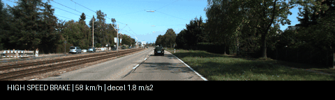
High-speed braking — 58 km/h deceleration
drive_0015 frame 0-48. Fastest sequence in the dataset. At 16 m/s, GPS update latency and LiDAR scan distortion from ego-motion become significant.
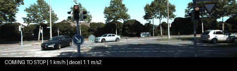
Coming to stop — perception handoff zone
drive_0009 frame 392-440. Vehicle decelerating to a full stop. The transition from motion-based to static perception is where tracking often drops objects.
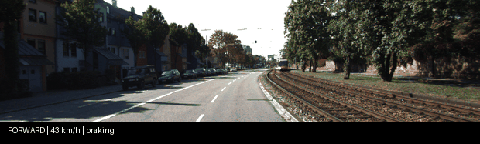
Highway braking — sensor fusion latency
drive_0001 frame 0-48. Higher speed with braking events. At 43 km/h, even 100ms of fusion latency means 1.2m of position uncertainty.
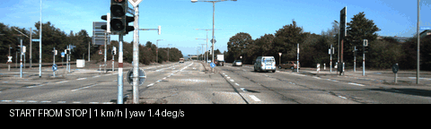
Start from stop — static-to-dynamic transition
drive_0018 frame 147-195. After 15 seconds stationary, the vehicle begins to move. Initial velocity estimate is noisy. GNSS often reacquires with a jump here.
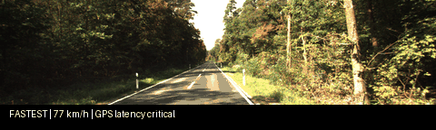
77 km/h — fastest in dataset, GPS latency critical
drive_0027 frame 147-187. At 21 m/s, a 50ms GPS update delay = 1.1m position error. LiDAR motion distortion is maximal. Any scan matching has to compensate aggressively.
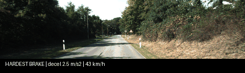
Hardest braking — 2.5 m/s² from 43 km/h
drive_0019 frame 147-195. Strongest deceleration in the dataset. Pitch angle changes during braking shift LiDAR FOV and camera horizon.
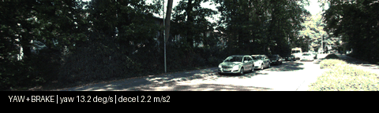
Yaw + brake combo — worst-case multi-axis stress
drive_0019 frame 392-440. Simultaneous high yaw rate and braking at near-stop speed. All sensor modalities are stressed: IMU coupling, wheel slip, and low-speed GPS noise.

Sharp turn #2 — low-speed yaw peak
drive_0046 frame 98-124. Near-maximum yaw rate at very low speed. Wheel encoder resolution limits and IMU gyro bias dominate at this speed.

Intersection turn — multi-lane crossing
drive_0029 frame 294-342. Turning through a complex intersection. Map matching ambiguity is highest here — multiple lane hypotheses.

Hard braking — first KITTI hard-brake detected
drive_0061 frame 637-685. Only hard braking event found across 25 KITTI sequences. Pitch change shifts LiDAR FOV and camera horizon simultaneously.